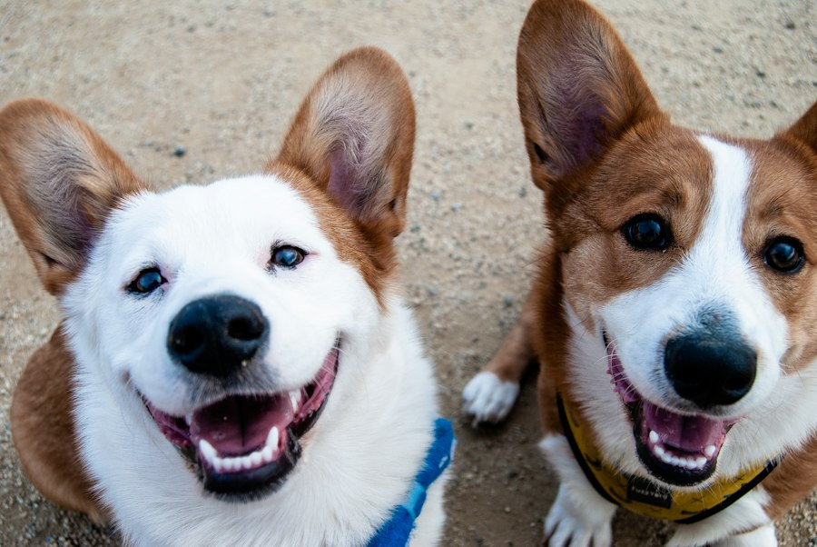

Our mission
Creating a Better World for Animals
Animal welfare is about ensuring that animals receive proper care, protection, respect and kindness.
This website highlights the importance of animal rescue, responsible pet ownership, adoption and community involvement.
Together, we can encourage people to treat animals with compassion and help create safer environments for them.
Explore Our ServicesLearn more
Frequently Asked Questions
Find out more about animal welfare and how you can make a difference.
SPCA stands for Society for the Prevention of Cruelty to Animals. It focuses on protecting animals and promoting their welfare.
Adoption gives animals an opportunity to find loving homes and encourages responsible pet ownership.
You can support animal welfare through responsible pet ownership, volunteering, donations and spreading awareness.
Animals need suitable food, clean water, shelter, veterinary attention and protection from cruelty.